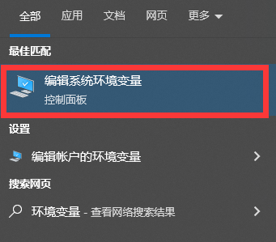
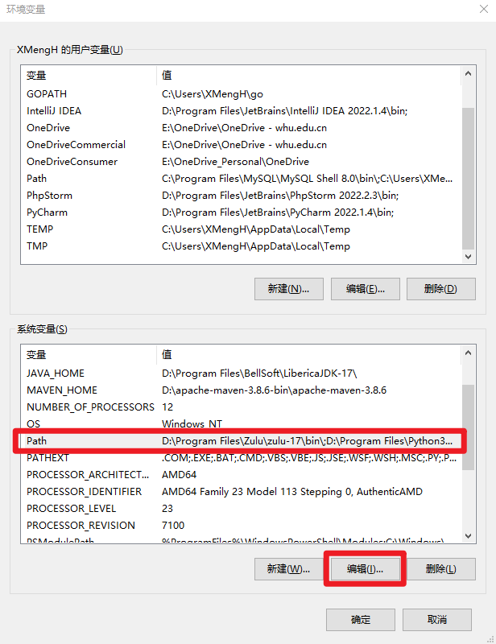
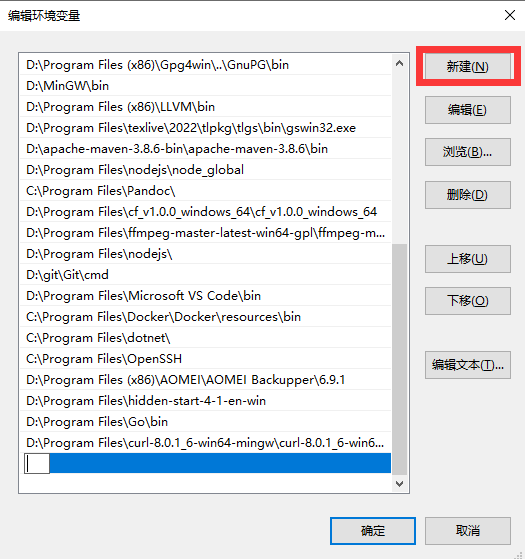
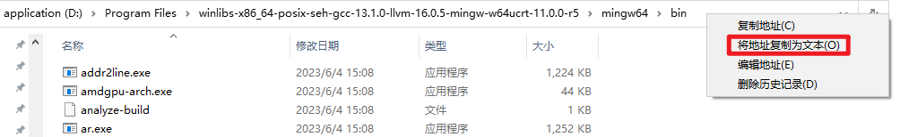
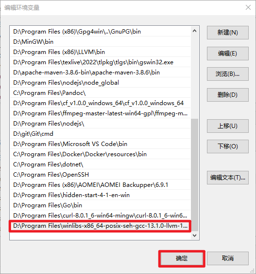

笔试题目参考文档
请事先简单阅读笔试题目。
前情提要
人们通过编写代码来指示计算机执行任务。以《原神》游戏为例，开发者编写代码定义角色的行为逻辑，包括奔跑和攻击等动作的触发条件和执行方式。因此，按下按钮时，软件执行对应代码段，使角色做出相应动作。
这引发了一系列关于编写代码的问题：如何编写代码？编写什么代码？如何让代码跑起来？代码应该存放在何处？在大学四年里，你将逐步探索这些问题。
接下来，让我们简要了解执行 C/C++ 程序的基本流程以及 Git 的基本操作。
入门 C/C++
C/C++ 具有底层控制能力，能够深入理解计算机内部工作原理。它们提供了丰富的编程功能和广泛的库支持，可用于开发各种应用和系统。学习 C/C++ 可以培养良好的编程思维和问题解决能力，为后续学习其他语言打下坚实基础。
文本编辑器
请在文本编辑器里编辑你的代码，这通常意味着代码高亮、智能缩进、错误提示等。
下面是一些推荐的文本编辑器的集合。其中一些也被认为是 IDE（集成开发环境），这意味着您可以使用它们做更多的事情，而不仅仅是编写代码。 建议你根据最适合自己的工作流程来选择。
编译系统简介[选读]
先看一个最简单的 C 语言程序 hello.c 吧。
#include <stdio.h>
int main()
{
printf("hello, world");
return 0;
}
hello 程序的生命周期是从一个高级 C 语言程序开始的，因为这种形式能够被人读懂。然而，为了在系统上运行 hello.c 程序，每条 C 语句都必须被其他程序转化为一系列的低级 机器语言 指令。然后这些指令按照一种称为 可执行目标程序 的格式打好包，并以二进制磁盘文件的形式存放起来。目标程序也称为 可执行目标文件。
在这里，GCC 编译器驱动程序读取源程序文件 hello.c，并把它翻译成一个可执行目标文件 hello。这个翻译过程可分为四个阶段完成，如图所示。执行这四个阶段的程序（预处理器、编译器、汇编器 和 链接器）一起构成了 编译系统（compilation system）。
配置 C/C++ 编译器
- 点击下载 MinGW 离线包。
- 将刚才下载的压缩包解压到你想要安装 C/C++ 编译器的地方。如遇无法解压 .7z 文件，强烈建议将解压缩软件更换为 7-Zip 或者 Bandizip。
- 系统环境变量添加MinGW64 bin路径。按键盘上的 Win 键，输入”环境变量“，点击”编辑系统环境变量“，然后按照下图操作。

 


- 验证是否配置成功 ：按键盘上的 Win 键，输入”cmd“，回车，在命令提示符窗口输入”gcc -v“，若返回包含版本号的一大串信息，说明配置成功。
命令行编译 C/C++
- 编译 C 文件：
gcc filename.c -o output - 编译 C++ 文件：
g++ filename.cpp -o output - 运行可执行文件：
output.exe
遇到问题及时求助
和笔试题的关联
笔试题目“步骤1 利用编程思想完成复杂任务”的默认解法：新建一个 .cpp 文件（参考代码已经在下面给出，但是需要简单修改），在命令行编译 .cpp 文件，然后执行程序。
参考代码
阅读以下 C++ 代码和输出，尝试理解和修改。
// 因 filesystem 需 C++17 标准支持，故需要特别指定
// g++ -std=c++17 filename.cpp -o output
#include <iostream>
#include <filesystem>
#include <fstream>
using namespace std;
int main() {
string folderPath = "E:\\Files";
string targetContent = "MSC2000";
for (const auto& entry : filesystem::directory_iterator(folderPath)) {
if (entry.path().extension() == ".txt") {
ifstream file(entry.path());
string content((istreambuf_iterator<char>(file)), istreambuf_iterator<char>());
file.close();
if (content == targetContent) {
cout << "The path to the target file: \n" << entry.path().string() << endl;
break;
}
}
}
return 0;
}
示例输出：
The path to the target file:
E:\Files\HU45M54FxRN92Ig.txt
入门 Git
关于代码的存放位置，让我们向你介绍一下 Git。
学习要点
- 了解什么是 Git 和 GitHub
- 将 Git 安装到自己的电脑上
- 学会 Git 的基本操作，包括 Git 推送、拉取、切换分支和克隆操作
- GitHub Fork 的基本操作
- GitHub PR 的基本操作
参考文档
本章提到的文档均采用较为官方的写作风格，讲求准确、完整、简洁、统一、易读。在进行各种学习/开发的过程中，优质的文档能够帮助我们节省很多时间，更加高效地完成任务。
招新 Git 文档：该文档涉及了笔试题里面需要的大多数考察点。
以下 2 个文档仅作参考，请你非必要不查阅。 入门时，建议选择那些易于理解和实践的教程或指南。最完整的文档往往不是一个好的选择，因其厚重容易让人失去兴趣和动力。
Git 文档：Pro Git
GitHub 官方文档：GitHub Docs